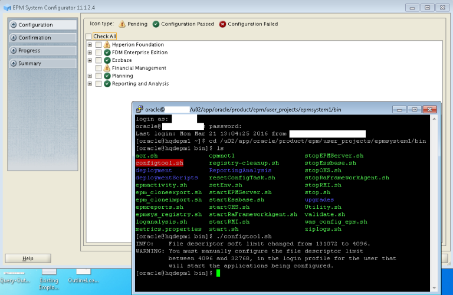

FDMEE Errors: Writeback failure
In this series of Blogs, I am going to document few FDMEE errors, especially version 11.1.2.4, which I couldn’t find with Unicode UTF-8…
FDMEE Error : Other Language Support
While we setup the Planning Applications in languages other than English, The Hyperion Essbase Database is created with Unicode UTF-8…

FDM Error : Loading ERP Data
Most of the time, Hyperion consultants who are not very much familiar with Linux operating system, face problems working with…
Creating an Essbase Report Script
Creating a Essbase Report script is one of the ways used to export data out from the Essbase Database. Other…
Financial Reporting ERROR 11.1.2.4 after patch application
In this blog I am writting the solution for Financial Reports not opening with FR Studio after patch application. After…
Financial Reporting ERROR 11.1.2.4 after patch application
Suppressing Null values When working with pivot tables, in rows or columns combination, if a value is present in database…